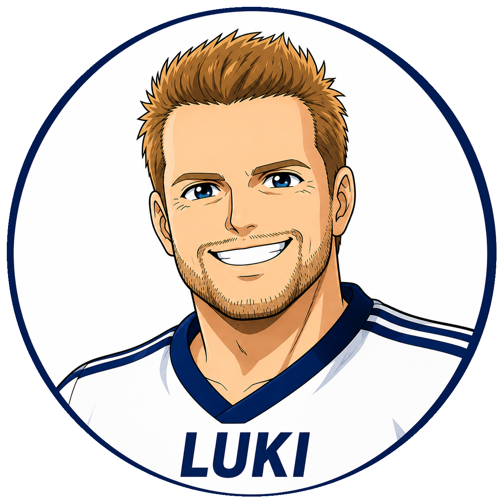

← Portal
Alle Manager
← Alle Manager

Saison 2025/26 · Spreeliga
Lukas Hechmann
Neu in der Liga
⚽
Kader folgt
Die Kaderdaten für Lukas Hechmann werden hier hinterlegt,
sobald die Saison beginnt.
← Schulle
11 / 11 Manager
→